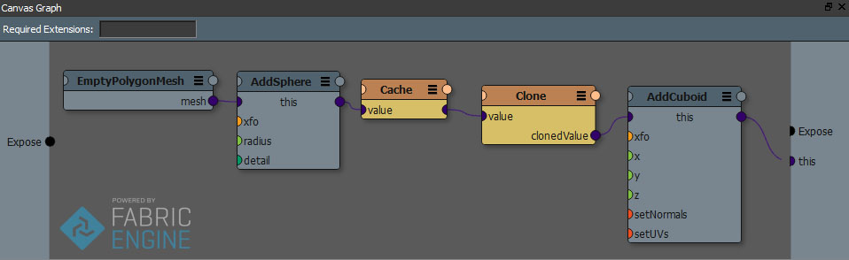

Caches¶
注釈
If you are looking for a less technical explanation please refer to Caches in the user guide.
Caches in Canvas are data points which save a copy of the computed value and refrain from recomputing it if none of the upstream inputs have changed. This is useful for branches in graphs which are expensive to compute.
Caches return immutable values, since it should not be possible for you to change the content of a reference counted data structure down stream (please see Reference counted data structures for more information). If you want to modify the returned value you’ll have to use a Clone node.
Caches are not to be mixed up with Variables. Caches are not guaranteed to be kept in memory. A memory manager might decide to clear them. The assumption is that it’s always possible to recompute the cache deterministically. You can not rely on the cache to always be kept around, if you need a guaranteed container please use a variable.
Any Canvas node supports caching, however for simplicity and visibility we’ve chosen to expose it to the user as a special node. Essentially that node is just a pass through node which has caching turned on. You can enable caching on your own presets only through the KL2DFG Command line utility, using the dfgPresetCacheRule doxygen qualifier and choosing always as the value.